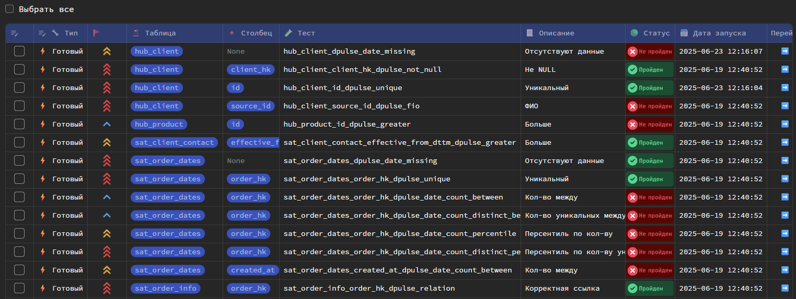
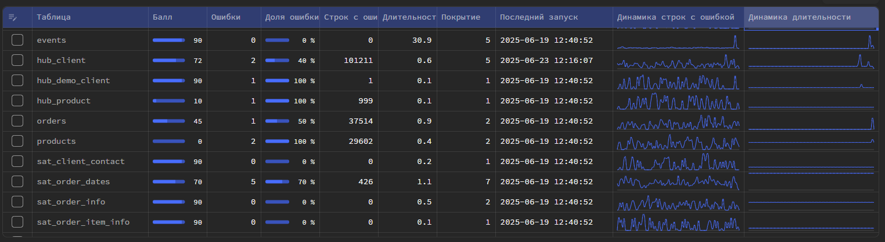
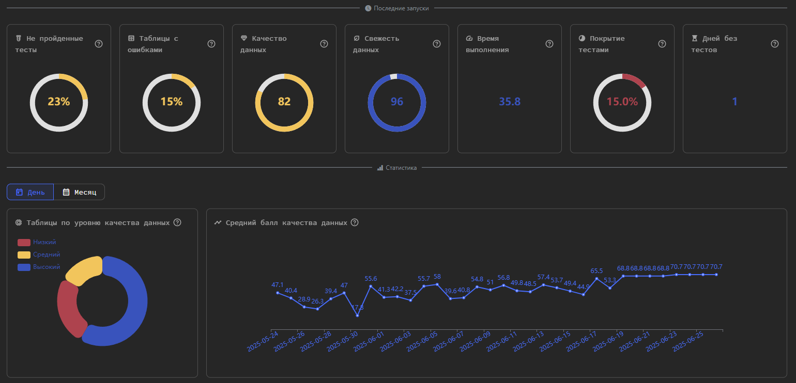
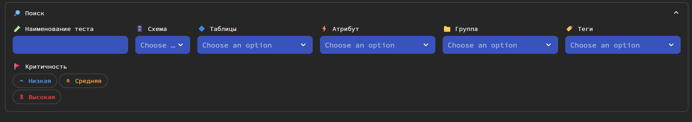

Мониторинг
Без мониторинга результаты работы тесты бесполезны.
Вся информация по созданным тестам, а также статистика их выполнения собрана в разделе "Качество данных".
Для инфо
Во избежание постоянного обращения к DWH за статистикой при обновлении страницы реализовано кэширование данных для сессии пользователя.
Чтобы обновить статистику вручную, нажмите кнопку "Обновить".
Каталог тестов
Во вкладке "Тесты" располагается каталог со всеми ранее созданными тестами.
В каталоге автоматически отображается информация о последнем статусе выполнения теста и последнее время его выполнения.

Модели с тестами
Во вкладке "Таблицы" располагается каталог с моделями dbt (таблицы и представления), которые покрыты тестами.
Для каждой модели отображается актуальная информация по последним результатам тестирования: балл качества данных, кол-во не пройденных тестов, кол-во строк с ошибками и т.д.

Дашбоард мониторинга
Во вкладке "Статистика" располагается графический дашбоард, который показывает текущее состояние ваших тестируемых отчетных витрин и статистику по тестированию.

Балл качества данных
Балл качества данных - универсальный показатель, который на основе результатах тестирования и объеме ошибок определяет "здоровье" вашей таблицы.
Показатель принимает значения от о до 100, где
| Диапазон | Значение |
|---|---|
| >= 90 | Хорошее качество данных |
| <= 70 и < 90 | Приемлемое качество данных |
| < 70 | Плохое качество данных |
Формула расчета показателя:
Если у таблицы тест завершился ошибкой, то будут добавлены штрафные баллы по следующему правилу:
По 10 баллов за каждые N ошибочных строк. Число N зависит от критичности теста
| Критичность | Каждые N строк |
|---|---|
| высокая | 1 |
| средняя | 10 |
| низкая | 100 |
Далее уже для таблицы вычисляется балл качества данных, путем: $$ 100 - \frac{\sum \text{Балл качества данных тестов}}{\text{Количество тестов у таблицы}} $$
Для инфо
Показатель рассчитывает на основе только последних результатов тестов.
Свежесть данных
Свежесть данных - показатель, который на основе длительности с момента последнего обновления определяет актуальность данных в таблице.
Показатель принимает значения от о до 100, где
| Диапазон | Значение |
|---|---|
| >= 90 | Хорошая свежесть данных |
| <= 70 и < 90 | Приемлемая свежесть данных |
| < 70 | Плохая свежесть данных |
Формула показателя: $$ 100 - \left( \sum\text{Дней без обновления} \right) \times 10 $$
Фильтрация
В разделе "Качество данных" можно фильтровать каталог тестов, таблиц и дашбоард с помощью встроенного поиска.
